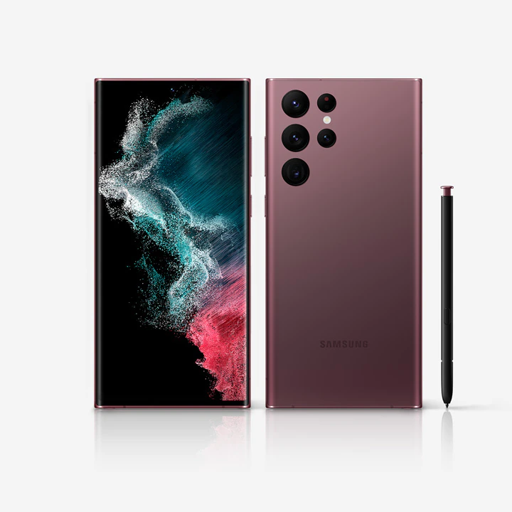

The iPhone was the first mobile phone with multi-touch technology. Since the iPhone's launch, it gained larger screen sizes, video-recording, waterproofing, and many accessibility features. Up to iPhone 8 and 8 Plus, iPhones had a single button on the front panel with the Touch ID fingerprint sensor. Since iPhone X, iPhone models have switched to a nearly bezel-less front screen design with Face ID facial recognition, and app switching activated by gestures. Touch ID is still used for the budget iPhone SE series.
Samsung was founded by Lee Byung-chul in 1938 as a trading company. Over the next three decades, the group diversified into areas including food processing, textiles, insurance, securities, and retail. Samsung entered the electronics industry in the late 1960s and the construction and shipbuilding industries in the mid-1970s; these areas would drive its subsequent growth. Following Lee's death in 1987, Samsung was separated into five business groups. Samsung Group, Shinsegae Group, CJ Group and Hansol Group, and JoongAng Group.
Huawei has deployed its products and services in more than 170 countries and areas. It overtook Ericsson in 2012 as the largest telecommunications equipment manufacturer in the world, and overtook Apple in 2018 as the second-largest manufacturer of smartphones in the world, behind Samsung Electronics. In 2018, Huawei reported annual revenue of US$108.5 billion. In July 2020, Huawei surpassed Samsung and Apple in the number of phones shipped worldwide for the first time.
OnePlus was founded by Pete Lau and Carl Pei on 16 December 2013 to develop a high-end flagship smartphone running CyanogenMod that would come to be known as the OnePlus One. OnePlus would continue to release phones throughout the 2010s and 2020s. In 2020, OnePlus released the OnePlus Nord, its first mid-range smartphone since the OnePlus X in 2015. Pei would oversee the design and marketing of OnePlus' products until his departure from the company in October 2020, going on to found the consumer electronics manufacturer Nothing.